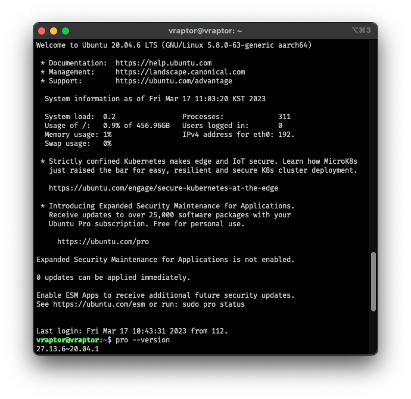
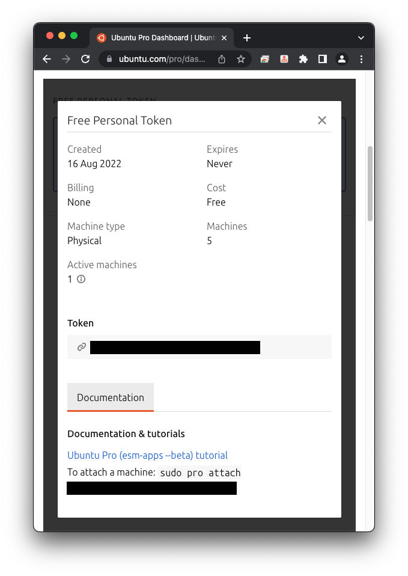
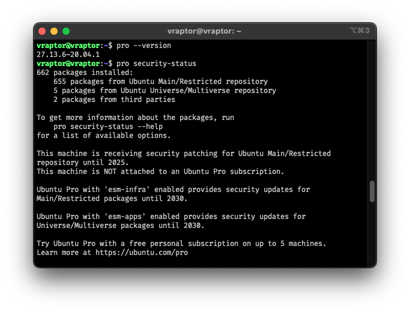
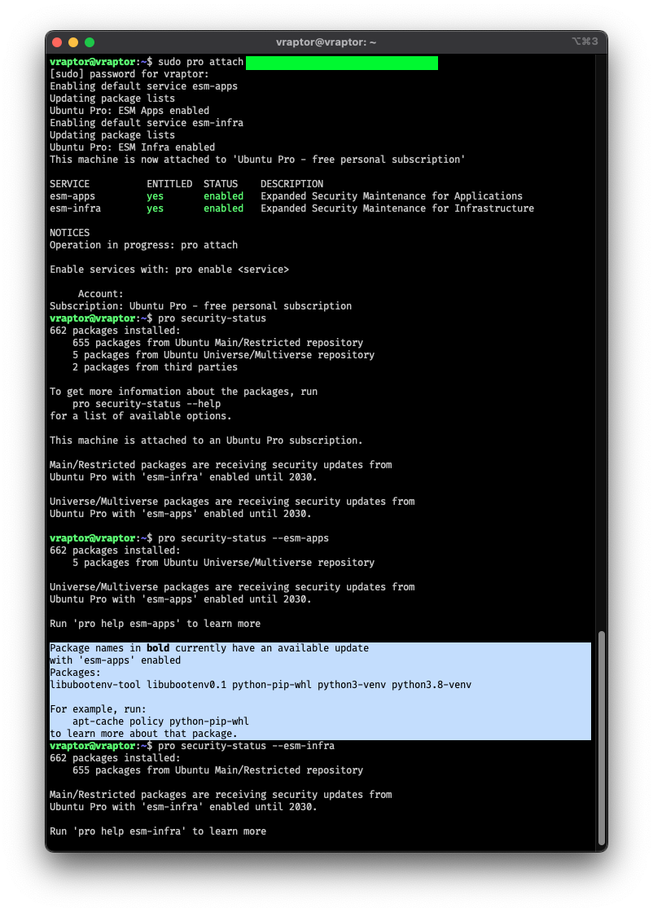

튜토리얼 레벨의 게시물입니다.
모든 정보는 https://ubuntu.com/pro/tutorial 에 기초합니다.
기타 초기 구성 중 이슈는 아래도 참고하시기 바랍니다.
https://canonical-ubuntu-pro-client.readthedocs-hosted.com/en/latest/index.html
계기
필자가 개인 데스크탑으로 사용하는 Ubuntu 버전이 22.10 (Kinetic Kudu), 23.04 (Lunar Lobster) 이기에, Ubuntu Pro를 적용해볼 기회가 없었다.
이번에 지인 분으로부터 제공받은 엑세스랩(XSLAB)사의 ARM 기반 Vraptor SQ nano를
클린설치하고 나니 Ubuntu 20.04.6 LTS (Focal Fossa) 버전이었기에, Ubuntu Pro를 적용해보기로 했다.
해당 제품은 보라몰/voramall에서도 만나볼 수 있다.
Ubuntu Pro란?
Ubuntu Pro는 Ubuntu의 구독 상품으로, 보안 등의 지원 기능을 추가한 서비스로 사전에 보안 취약점을 빠르게 보완해서 데이터를 보호하는게 여러모로 절감되지 않을 까 싶기에 인상 깊었던 프로덕트였다.
기존에는 Ubuntu Advantage라는 이름으로 제공되었으나, 21년 상반기에 Ubuntu Pro로 이름이 변경되었다.
위에서 언급했다시피, 이 상품은 LTS(Long Term Support) 버전에만 제공된다.
5년 동안 우분투 메인 레포 업데이트를 제공하는 LTS 버전에 추가적으로 5년을 더해
총 10년간의 보안 업데이트를 제공하는 것이 골자지만, 이걸로 넘기기에는 Pro의 또 다른 이점이 있다.
CVE(Critical Vulnerability Exploit) 취약점 관련 지원 또한 제공된다.
CVE 취약점 관련을 확인해보고 싶어서 개인용을 해보았다.
개인적 사용목적으로 최대 5개 기기에서 Free Personal Token을 발급받을 수 있다.
Ubuntu Pro를 적용해보자
1. Ubuntu Pro를 적용하기 위한 준비
- 기본적으로 Ubuntu Pro는 최신으로 업데이트된 LTS 배포판이라면 설치되어있다
- 16.04 이전 버전은
ubuntu-advantage-tools패키지를 설치해야 한다. (최대한 20.04 이상의 LTS 버전을 사용하도록 하자)
- 16.04 이전 버전은

- Ubuntu Pro 대시보드에서
Free Personal Token을 발급받는다.

2. Ubuntu Pro를 적용하기
- 토큰을 적용하지 않으면
pro security-status입력 시, 구독 상태가 아니라고 확인

- 토큰을 적용해본다.
sudo pro attach ${TOKEN_VALUE}명령어를 입력한다.- 그러면 서비스가 활성화된다. 필자의 구독의 경우 개인용이기에, esm-infra와 esm-apps가 활성화 되었다.
- 음영처리한 부분이 필자가 Ubuntu Pro를 설치한 목적. 패키지 상태를 모니터링 할 수 있다.

3. 취약점 확인하기
- 원래는 Bold 된 패키지가 나왔다면, 취약점을 가지고 있다는 뜻이므로 바로 적용하려 했으나 아직 취약점이 없는 것 같다.
- 있다면, 튜토리얼을 참조하여 해당 취약점을 보완해보자.
- readthedocs 또한 잘 정리되어 있다.
pro fix CVE-20YY-XXXX: CVE 넘버를 알고있다면, 이 명령어를 통해 보완할 수 있다.